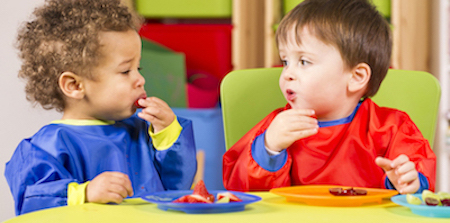
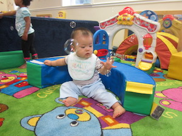

Infants & Toddlers
Infant Care at Kids Klub means going beyond providing for the child’s basic needs of feeding, sleeping, and frequent diaper changes, as found at other Pasadena daycare facilities, to coddling them developmentally. In the first two years of life, they will be taking their first steps, not just while learning how to walk, but while interacting socially, developing emotionally, and while unfolding as conscious, cognitive human beings. As their primary care provider, it is our responsibility to be aware of these first steps as they are occurring and to cultivate the child’s development. In addition, our infant component staff is sensitive to the needs of parents; helping with separation, recording your child’s activities during the day, and providing for any other needs you or your child may have.
Our infant program is designed to embrace the excitement of discovery and expose the children to their world in a safe, nurturing manner. By stimulating their senses, they learn to be aware of their environment; such as feeling or experiencing different textures or hearing different sounds. Additionally, at this age their language skills start to develop and are improved through the use of story time and music & movement time.
Our infant program is full-service providing diapers, wipes, and meals as well as individual cribs or mats with sheets and blankets for each child. Our staffing ratio for infants averages 3 children to 1 teacher.